Photo setup: select, build, review Actual application captures at 9225698ef70e. 7 isolated development journeys passed. Photo and inference fixtures are synthetic; timeout, clarification and network failure are controlled fault responses. These captures establish interface behavior, not real-room reconstruction accuracy.
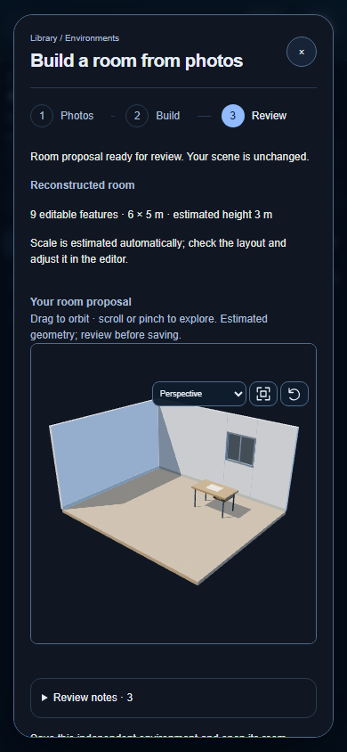
environment photo 1 view demo 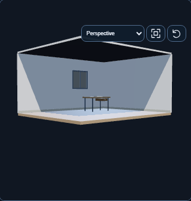
environment photo 1 view orbited 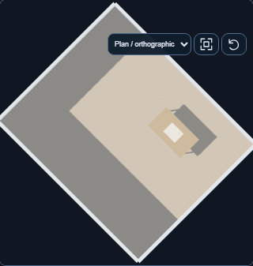
environment photo 1 view plan 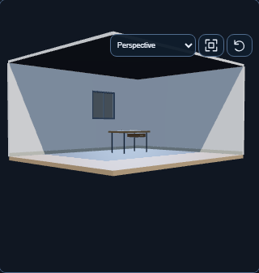
environment photo 1 view zoomed 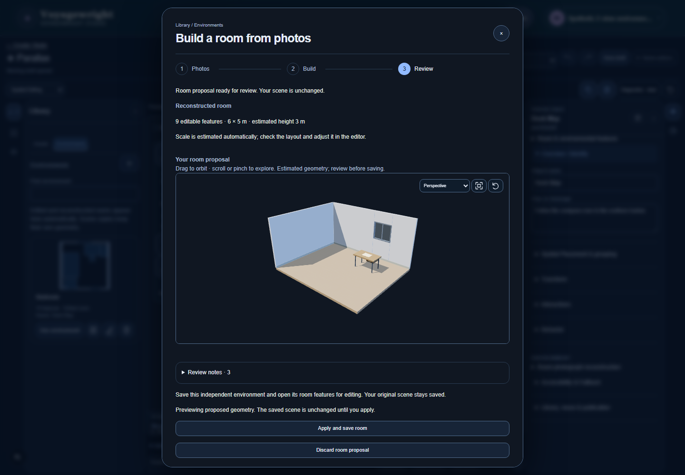
environment photo 2 view demo 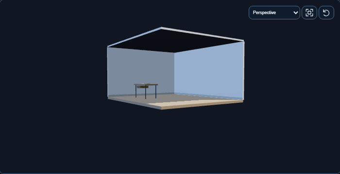
environment photo 2 view orbited 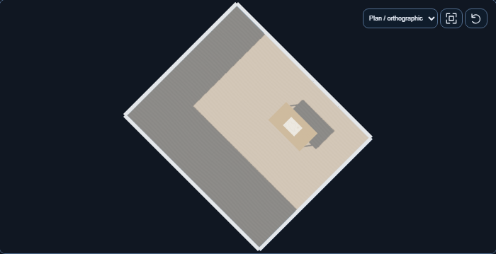
environment photo 2 view plan 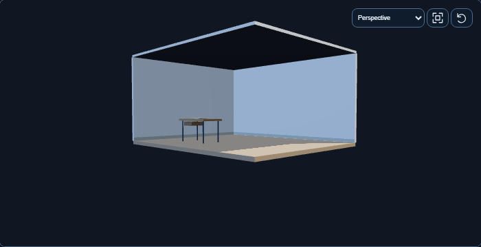
environment photo 2 view zoomed 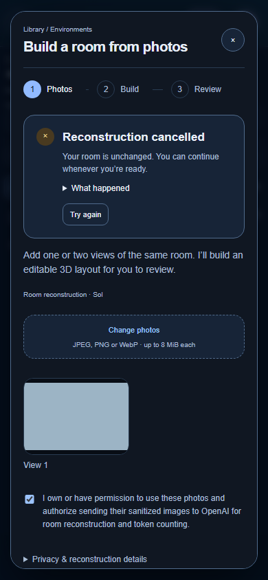
environment photo cancelled 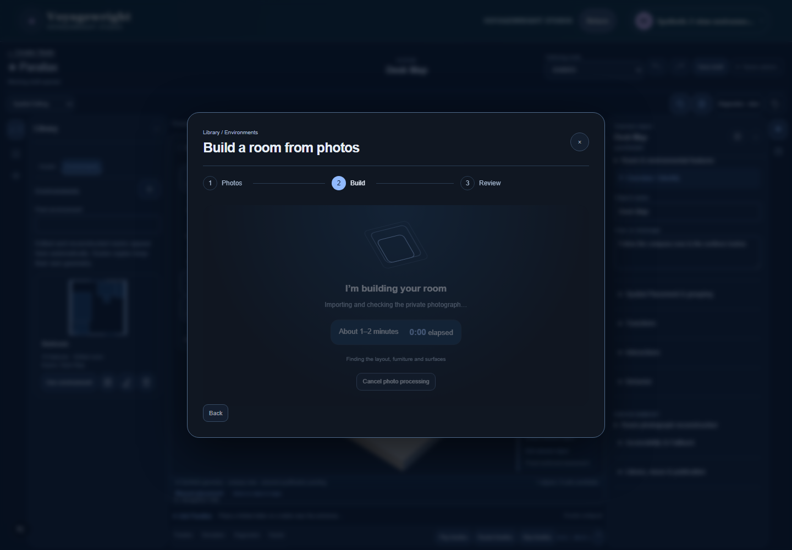
environment photo processing 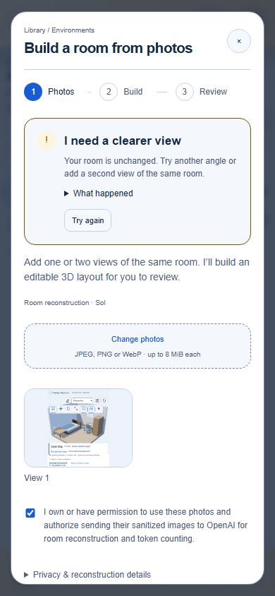
photo clarification phone light recovery 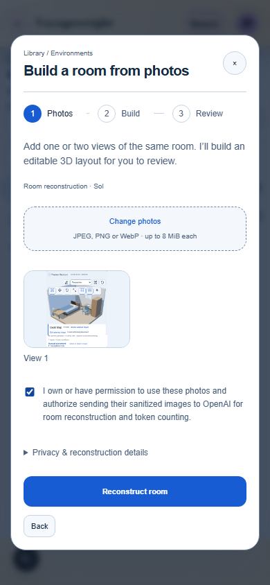
photo clarification phone light setup 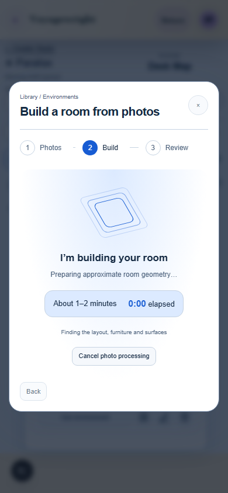
photo clarification phone light thinking 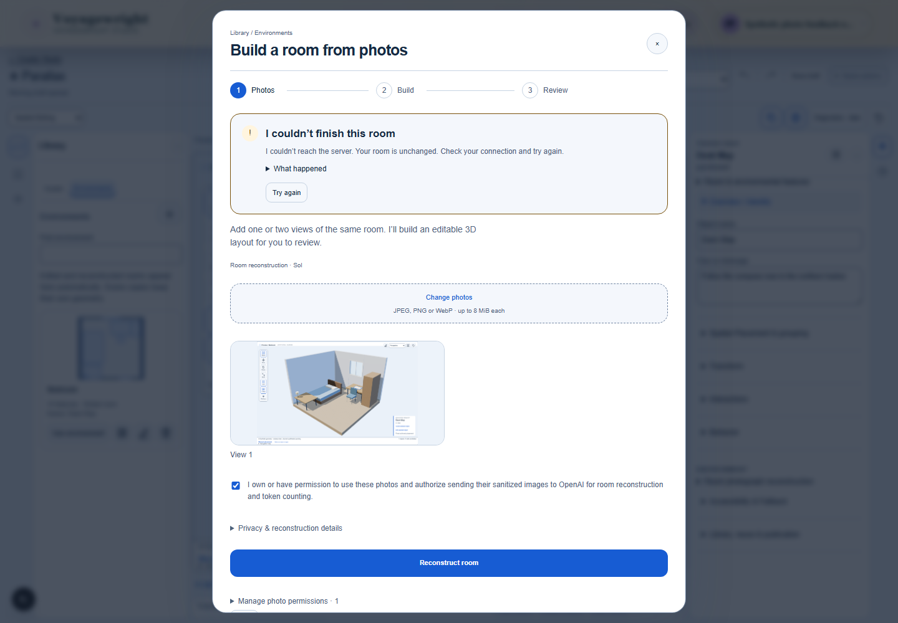
photo network desktop light recovery 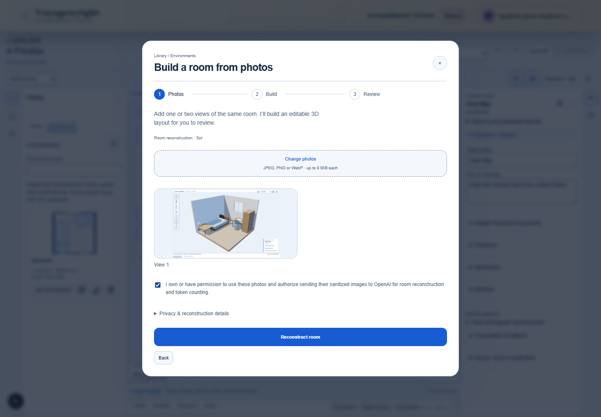
photo network desktop light setup 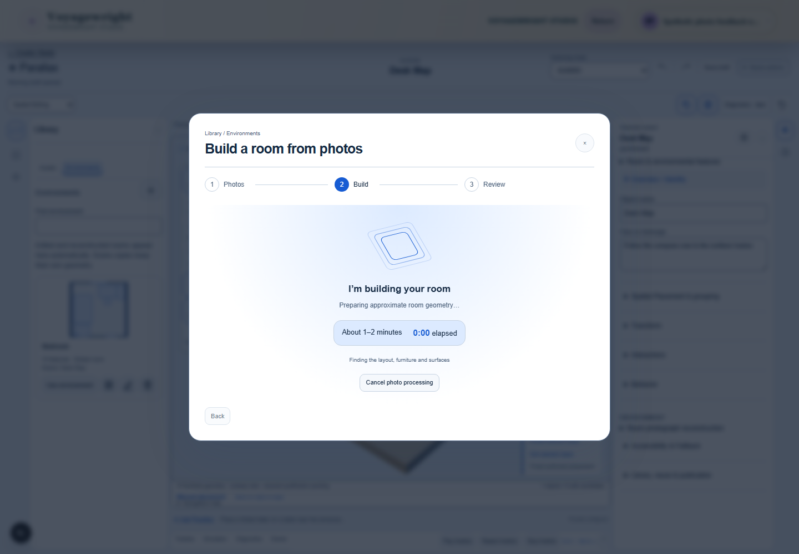
photo network desktop light thinking 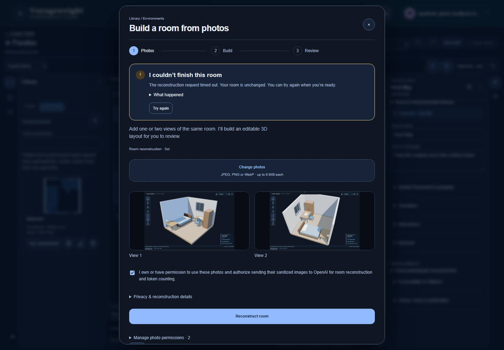
photo timeout dark recovery 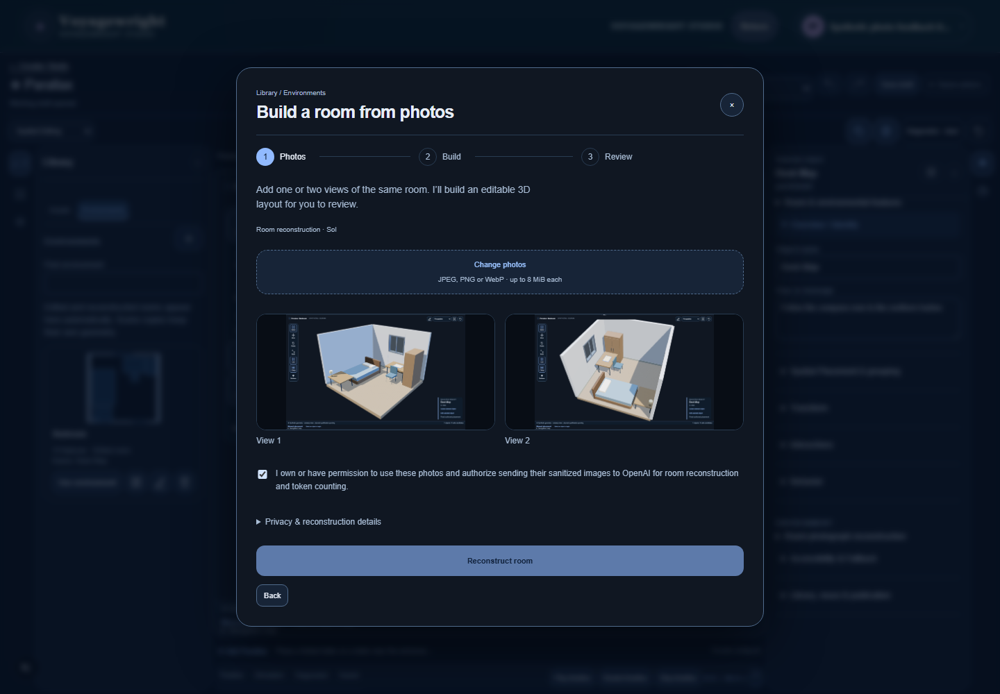
photo timeout dark setup 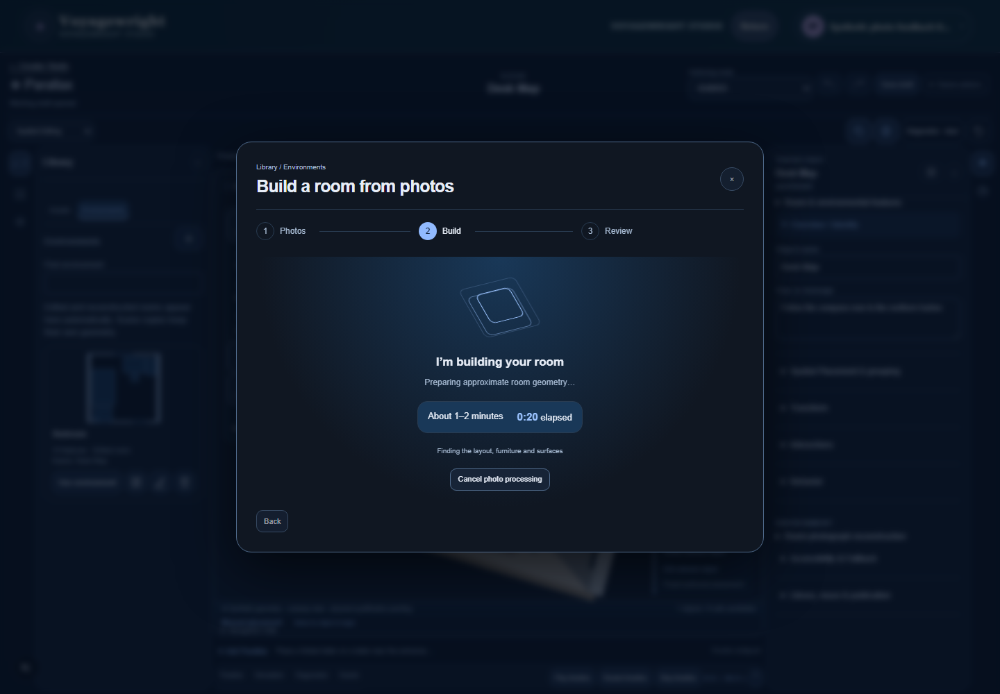
photo timeout dark thinking Recorded journeys photo-parallax-ai-quotas-Admiral-a2051-the-existing-People-dossier-chromium-video-1.webm photo-parallax-ai-quotas-Admiral-a2051-the-existing-People-dossier-chromium-video-2.webm photo-parallax-ai-quotas-Admiral-a2051-the-existing-People-dossier-chromium-video.webm photo-parallax-environment-creat-ca91a-n-independent-editable-room-chromium-video.webm photo-parallax-environment-creat-f049b-n-independent-editable-room-chromium-video.webm photo-parallax-photo-feedback-Ph-6940f-ithout-modifying-the-source-chromium-video.webm photo-parallax-photo-feedback-Ph-a8abc-ithout-modifying-the-source-chromium-video.webm photo-parallax-photo-feedback-Ph-f2dc4-ithout-modifying-the-source-chromium-video.webm photo-parallax-room-photo-Creato-f6a5a-tter-and-replays-its-reveal-chromium-video.webm Source and artifact manifest